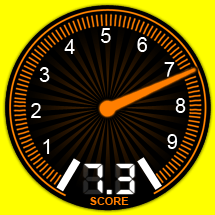
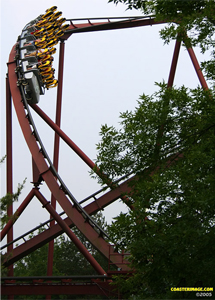

IRON WOLF
<<< back to SIX FLAGS GREAT AMERICA
SPECS
Max Height: 100 ft.
Max Speed: 55 mph
Inversions: 2
Duration: 2 min.
Manufacturer: Bolliger & Mabillard
REIVEW
Iron Wolf is a nice stand up ride created by B&M. Although it is smaller than most coasters made today, it is an enjoyable ride, as long as you can avoid getting your head roughed up in the end. But this headache is nothing compared to the one received from Mantis at Cedar Point. Anyways, this ride has good elements with a loop, a corkscrew, good turns, and a few drops. Overall, Iron Wolf is a pretty good ride